Survival Analysis Report (IBM Telco Churn)
Survival Analysis Report(Q2-2)
Background and Data Overview
Survival analysis is a branch of statistics concerned with the time until an event of interest occurs. In a business context, the “event” is often customer churn, and survival analysis is particularly powerful because it naturally handles censoring—situations where the event has not yet been observed for some customers during the study period. This allows us to unbiasedly estimate customer lifetimes and model the effects of various factors on churn risk.
The dataset used in this study is the IBM Telco Customer Churn dataset, which contains information on 7,043 customers of a fictional telecommunications company, including demographics, account details, and subscribed services. For this analysis, we focus on the segment of customers who subscribe to a Month‑to‑month contract and have either DSL or fiber optic internet service. After applying these filters, the final cohort consists of 3,351 customers, among whom 1,556 eventually churned (i.e., the event of interest occurred), while the remaining 1,795 are regarded as right‑censored.
The objectives of this report are twofold. First, we aim to identify key factors that influence customer churn by applying non‑parametric methods (Kaplan–Meier estimator and log‑rank test), semi‑parametric methods (Cox proportional hazards model), and a parametric accelerated failure time (AFT) model. Second, we leverage the survival probabilities estimated from the Cox model to calculate the customer lifetime value (CLV), expressed as the net present value of expected future profits, which can inform retention strategies and resource allocation.
Data Preprocessing and Exploratory Analysis
Data Cleaning and Feature Engineering
The raw CSV data is first ingested into a Bronze layer by specifying an explicit schema. Invalid churn labels (neither “Yes” nor “No”) are removed, and only customers with a Month‑to‑month contract who subscribe to an internet service (DSL or fiber optic) are retained in the Silver layer. Categorical variables such as Dependents, InternetService, OnlineBackup and TechSupport are then recoded using one‑hot encoding, producing binary indicator columns that serve as covariates in subsequent survival models. The final dataset contains 3,351 subjects and 1,556 observed churn events.
Overall Kaplan–Meier Survival Curve
To obtain a global view of customer retention, we first estimate the survival function for the entire cohort using the Kaplan–Meier (KM) estimator. The resulting curve (图1) shows a steep decline during the first few months of the contract, followed by a more gradual decay. The estimated median survival time is 34 months, meaning that half of the customers in this segment are expected to churn within approximately 34 months of their subscription.
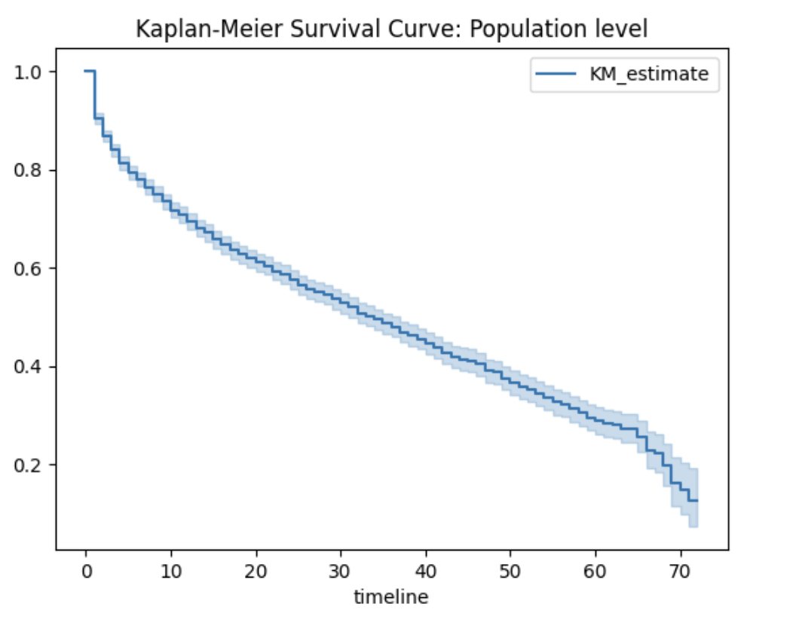
图1: Overall Kaplan–Meier survival curve for the selected cohort (month‑to‑month contract, internet users).
Stratified Kaplan–Meier Curves and Log‑Rank Test
We next examine whether the survival experience differs across levels of several covariates by plotting stratified KM curves and performing the log‑rank test. The variables considered include gender, PaymentMethod, Partner, Dependents, InternetService, OnlineSecurity, OnlineBackup, DeviceProtection, and TechSupport.
For Gender, the two survival curves nearly overlap (图2), and the log‑rank test yields a p‑value of approximately 0.153, indicating no statistically significant difference between male and female customers.
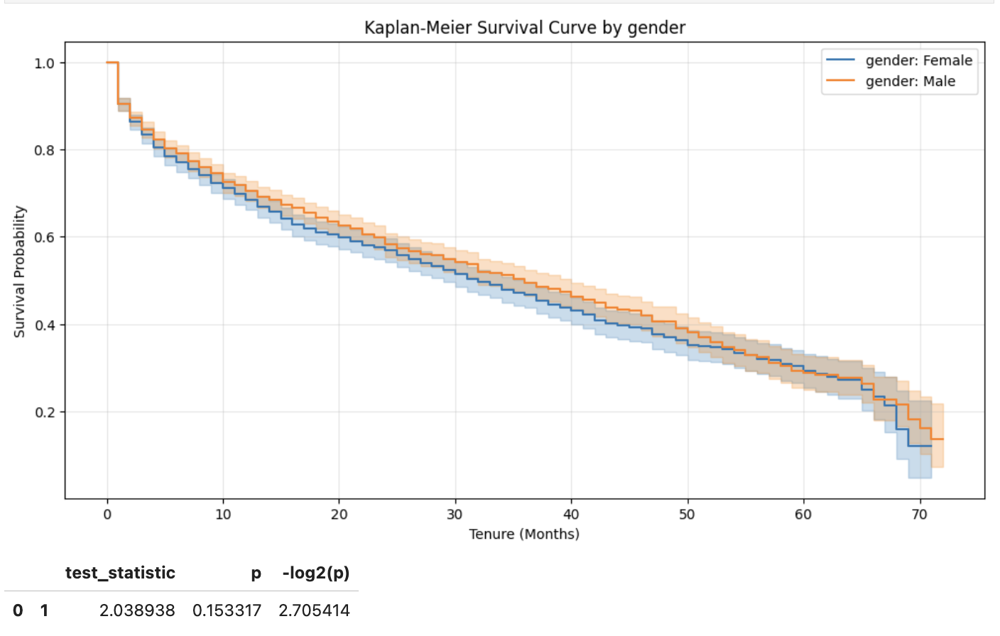
图2: Kaplan–Meier survival curves stratified by gender.
In contrast, PaymentMethod reveals highly significant differences (图3 and 表1). Customers who pay via electronic check exhibit markedly lower survival probabilities than those using automatic bank transfer, credit card, or mailed check. The pairwise log‑rank tests confirm that electronic check is significantly worse than every other payment method (all p-values < $10^{-10}$), while differences among the remaining methods are not significant.
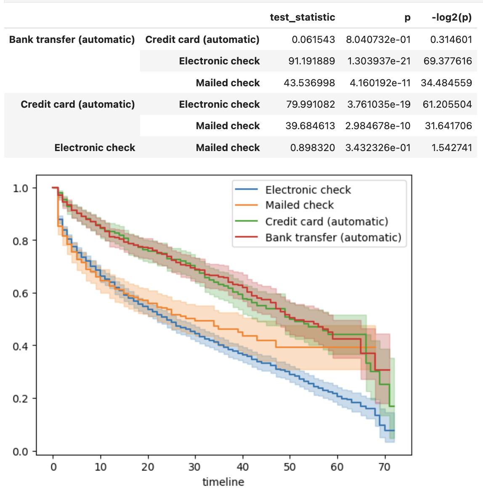
图3: Kaplan–Meier survival curves stratified by payment method.
表1: Pairwise log‑rank tests for PaymentMethod (selected comparisons).
| Group 1 | Group 2 | Test statistic | p‑value |
|---|---|---|---|
| Bank transfer (auto.) | Credit card (auto.) | 0.06 | 0.80 |
| Bank transfer (auto.) | Electronic check | 91.19 | <0.005 |
| Bank transfer (auto.) | Mailed check | 43.54 | <0.005 |
| Credit card (auto.) | Electronic check | 79.99 | <0.005 |
| Credit card (auto.) | Mailed check | 39.68 | <0.005 |
| Electronic check | Mailed check | 0.90 | 0.34 |
Similar analyses for the other covariates (not all shown here) indicate that most of them, such as OnlineBackup and TechSupport, are strongly associated with survival time and will be included as predictors in the Cox and AFT models.
To further illustrate the survival experience across different levels of a covariate, 表2 gives the estimated survival probabilities for the first nine months for customers with DSL internet service, obtained from the Kaplan–Meier estimator.
表2: Estimated survival probabilities (first 9 months) for DSL internet service users.
| Month | Survival Probability (DSL) |
|---|---|
| 0 | 1.000000 |
| 1 | 0.902698 |
| 2 | 0.864380 |
| 3 | 0.834702 |
| 4 | 0.810522 |
| 5 | 0.794352 |
| 6 | 0.783900 |
| 7 | 0.776362 |
| 8 | 0.768486 |
| 9 | 0.750833 |
The table indicates, for example, that the probability of a DSL customer surviving (i.e., not churning) beyond the first month is approximately 0.903, and by the ninth month it drops to about 0.751. Such tables can be generated for any covariate level using the survival_function_at_times method of KaplanMeierFitter.
Cox Proportional Hazards Model
Model Motivation and Proportional Hazards Assumption
The Cox proportional hazards (PH) model is a semi‑parametric regression that relates the hazard function $(h(t \mid \mathbf{x}))$ to a baseline hazard $(h_0(t))$ and a linear predictorz $(\exp(\boldsymbol{\beta}^\top \mathbf{x}))$. The key assumption is that the hazard ratio between any two individuals is constant over time—the proportional hazards (PH) assumption. 图4 illustrates this concept: parallel trends on the hazard scale satisfy the assumption, while diverging trends violate it.
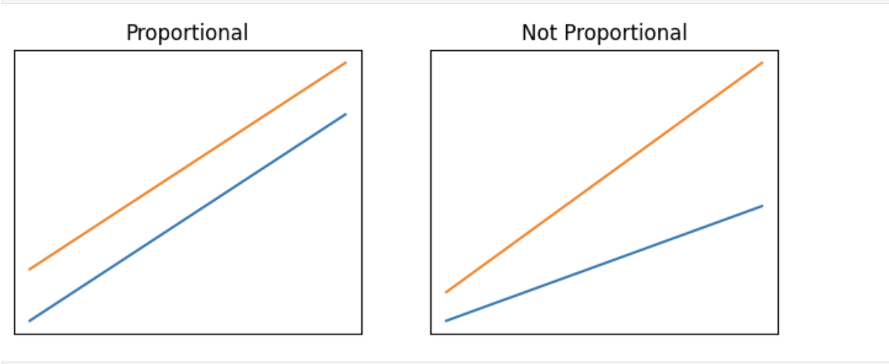
图4: Illustration of proportional (left) and non‑proportional (right) hazards.
Data Preparation and Model Fitting
Categorical variables must be one‑hot encoded for the lifelines Cox model. We selected dependents, internetService, onlineBackup and techSupport, and dropped one level from each one‑hot group (the level whose Kaplan–Meier curve most closely resembled the population) to avoid multicollinearity and provide an intuitive baseline. The final model uses the four binary indicators:
dependents_YesinternetService_DSLonlineBackup_YestechSupport_Yes
We fit the model using CoxPHFitter(alpha=0.05) from the lifelines library. The model summary is shown in 图5.
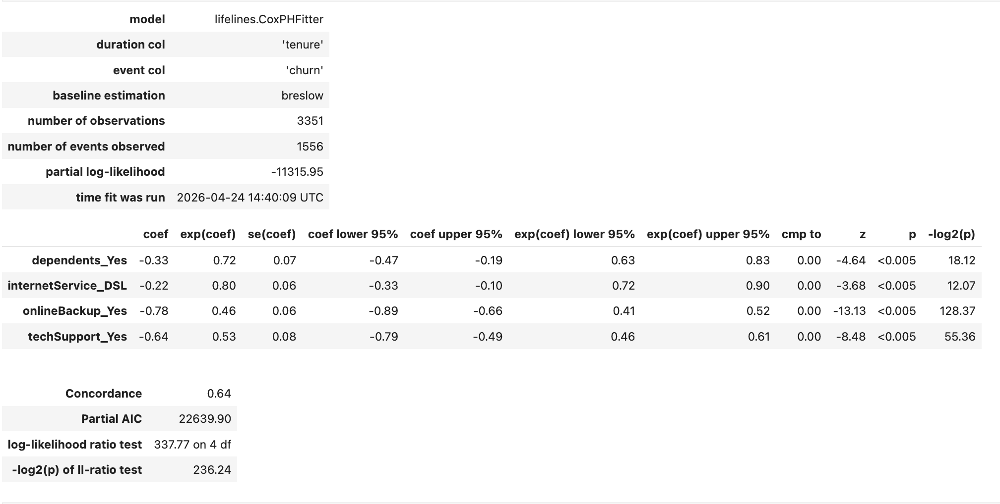
图5: Cox proportional hazards model summary.
Interpretation of Coefficients
All four covariates have negative coefficients, meaning each reduces the instantaneous risk of churn relative to its baseline category. The hazard ratios (HR) and their 95% confidence intervals are:
- dependents_Yes: HR = 0.72 (95% CI: 0.63–0.83). Having dependents lowers churn risk by 28%.
- internetService_DSL: HR = 0.80 (95% CI: 0.72–0.90). DSL users have a 20% lower hazard compared to fiber optic users.
- onlineBackup_Yes: HR = 0.46 (95% CI: 0.41–0.52). Online backup subscribers experience a 54% reduction in hazard.
- techSupport_Yes: HR = 0.53 (95% CI: 0.46–0.61). Tech support reduces hazard by 47%.
The forest plot in 图6 summarises these effects. The model’s concordance index is 0.64 and the likelihood ratio test is highly significant (p<0.005).
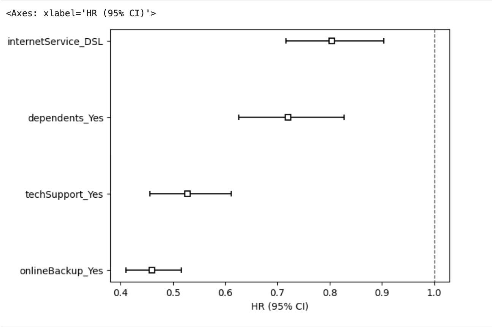
图6: Cox model hazard ratios with 95% confidence intervals.
Checking the Proportional Hazards Assumption
The PH assumption is critical for inference. We check it using three complementary methods.
Statistical test
We apply the scaled Schoenfeld residual test via cph.check_assumptions(). As 表3 shows, dependents_Yes satisfies the assumption (p=0.37), while the other three covariates strongly violate it (p<0.0005). This pattern mirrors the original tutorial findings.
表3: Scaled Schoenfeld residual test (rank‑transformed time) for the Cox model.
| Covariate | Test statistic | p‑value |
|---|---|---|
| dependents_Yes | 0.81 | 0.37 |
| internetService_DSL | 26.71 | <0.005 |
| onlineBackup_Yes | 17.47 | <0.005 |
| techSupport_Yes | 13.76 | <0.005 |
Schoenfeld residual plots
Schoenfeld residuals should show no trend over time if the PH assumption holds. 图7 displays the residual plots for the four covariates. For dependents_Yes the residual line is roughly flat, confirming the test result. In contrast, internetService_DSL, onlineBackup_Yes, and techSupport_Yes exhibit clear and consistent trends, especially onlineBackup_Yes which shows the most pronounced deviation. These visual patterns reinforce the statistical findings.
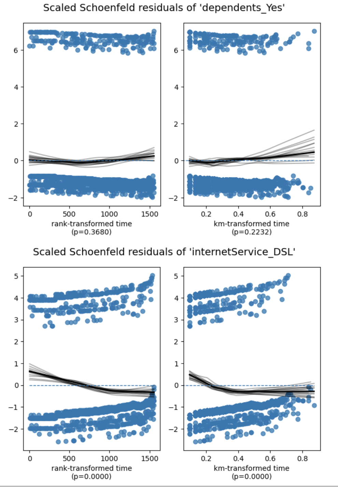
图7a: Schoenfeld residuals – part 1
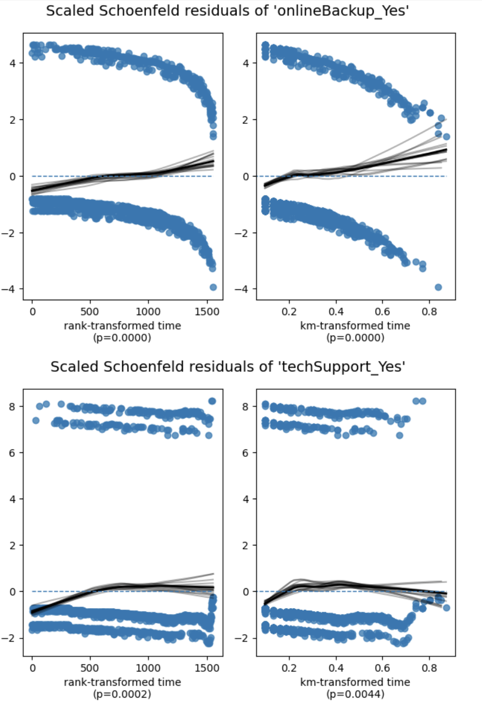
图7b: Schoenfeld residuals – part 2
Log‑log Kaplan–Meier plots
Log‑log survival plots provide a direct graphical check: parallel curves suggest the PH assumption holds, while crossing or diverging curves signal violations. 图8 shows the log‑log KM curves for the four covariates used in the model.
With the exception of internetService_DSL, the curves for the other three covariates are mostly parallel when log(time) is between 1 and 3, but deviate noticeably when log(time) is less than 1 or greater than 3. This pattern is consistent with the original tutorial’s observation and explains why the global Schoenfeld tests reject PH for those covariates. Despite the violations, the model can still be used for approximate inference, especially if the focus is on the central range of the observation period.
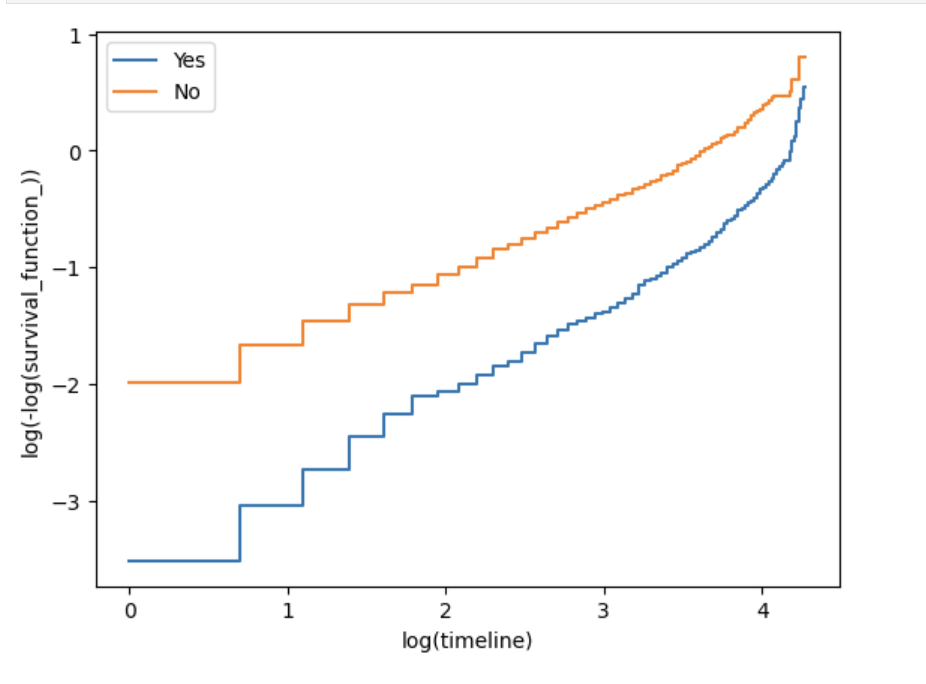
图8a: Log‑log Kaplan–Meier plot for
onlineBackup
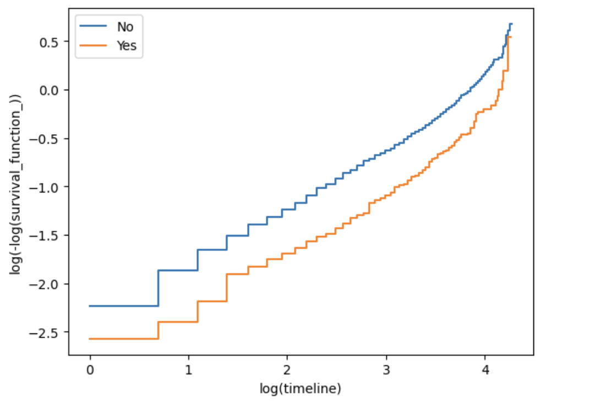
图8b: Log‑log Kaplan–Meier plot for
dependents
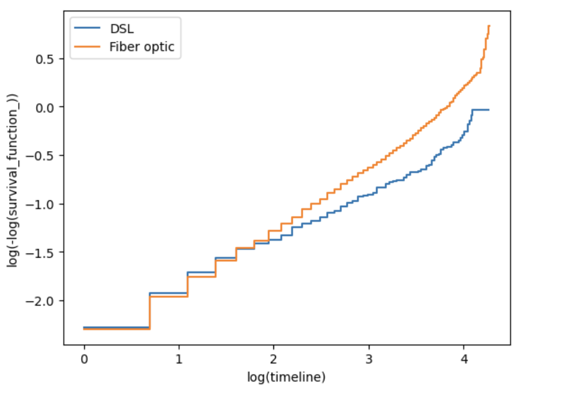
图8c: Log‑log Kaplan–Meier plot for
internetService
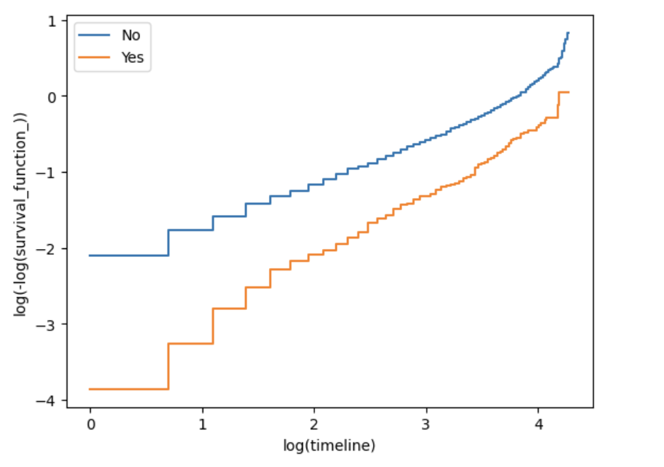
图8d: Log‑log Kaplan–Meier plot for
techSupport
In summary, the PH assumption is satisfied for dependents_Yes but not for the remaining three covariates. The violation is most severe for onlineBackup_Yes. Nevertheless, the model provides useful average hazard ratio estimates, and the identified risk factors are consistent with prior exploratory analysis.
Accelerated Failure Time (AFT) Model
Model Motivation and Distribution Diagnostics
While the Cox proportional hazards model is widely used, it does not directly model survival times. The accelerated failure time (AFT) model parametrically models the logarithm of survival time as a linear function of covariates. This yields an intuitive acceleration factor: a value greater than 1 indicates that the expected survival time is prolonged by that factor.
We choose the log‑logistic distribution for the AFT model because of its flexibility in handling non‑monotonic hazards. However, the model requires verification of two key assumptions:
- Distributional assumption: The specified distribution (log‑logistic) is appropriate if the log‑odds of failure are approximately linear in log‑time.
- Proportional odds assumption: The effect of a covariate is constant across time if the log‑odds curves for different levels of that covariate are parallel.
Both assumptions can be assessed graphically by plotting $(\ln\bigl((1-S(t))/S(t)\bigr))$ against $(\ln(t))$ for each level of a categorical covariate. Straight and parallel lines support the model.
We generated such plots for all eight covariates used in the model. The full set of diagnostics is omitted here for brevity, but representative plots for Partner and MultipleLines are shown in 图9. As the original analysis notes, for most covariates the lines are relatively straight, suggesting that the log‑logistic distribution is a reasonable choice. However, the lines are often not parallel, indicating that the proportional odds assumption of the AFT model is not fully satisfied. Consequently, the AFT results should be interpreted with caution, although they still provide useful insights into covariate effects on survival time.
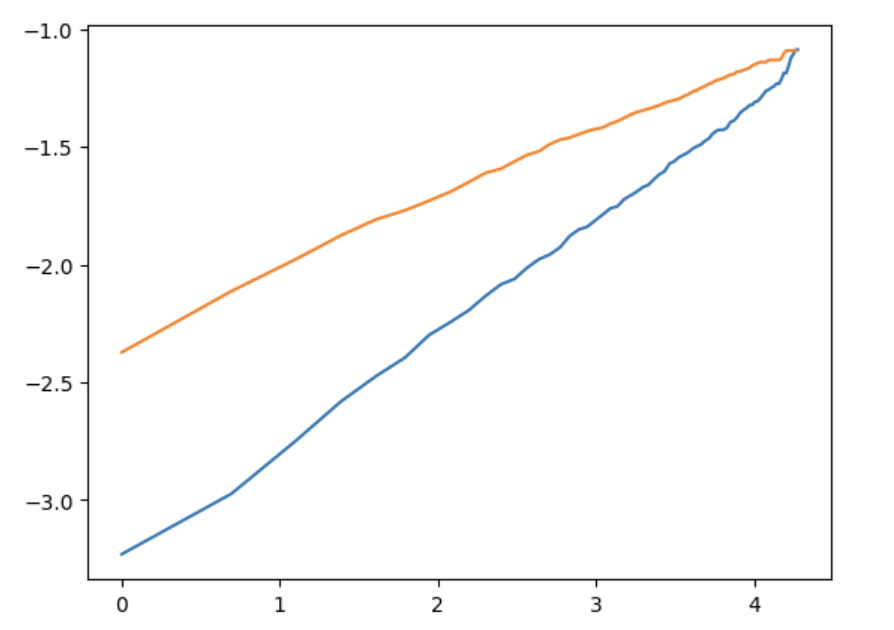
图9a: Log‑odds of failure versus log‑time for
Partner
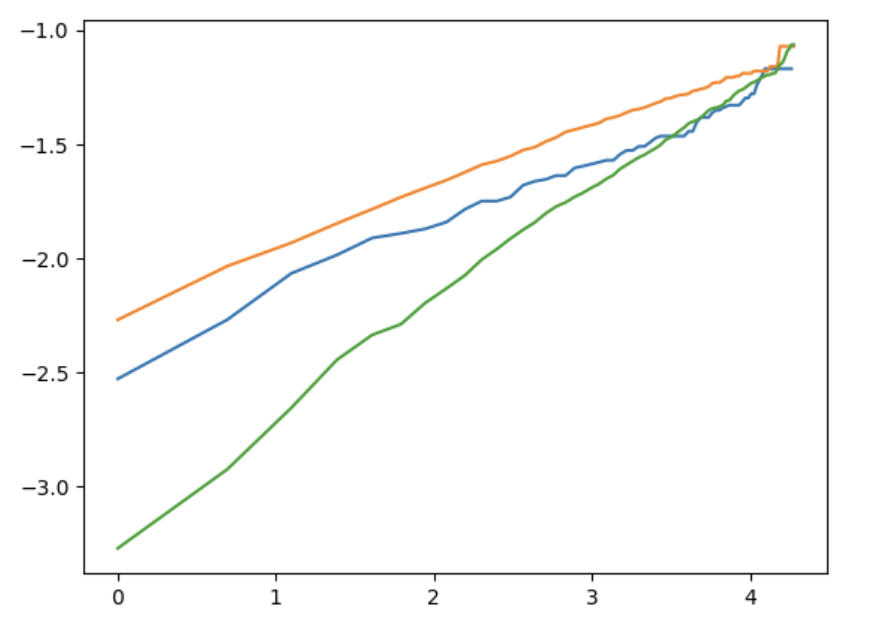
图9b: Log‑odds of failure versus log‑time for
MultipleLines
Model Fitting and Summary
The log‑logistic AFT model was fitted using LogLogisticAFTFitter from the lifelines library. The following covariates were included (the baseline levels are those omitted in the one‑hot encoding): partner_Yes, multipleLines_Yes, internetService_DSL, onlineSecurity_Yes, onlineBackup_Yes, deviceProtection_Yes, techSupport_Yes, and two payment method indicators (paymentMethod_Bank transfer (automatic) and paymentMethod_Credit card (automatic)). This set matches the Cox model but adds several service‑related variables.
The model summary is shown in 图10. All covariates are statistically significant (p<0.005), and the model yields a concordance index of 0.73, reflecting improved predictive accuracy compared to the simpler Cox specification. The exponentiated median survival time at the baseline is approximately 135.5 months, serving as a reference.
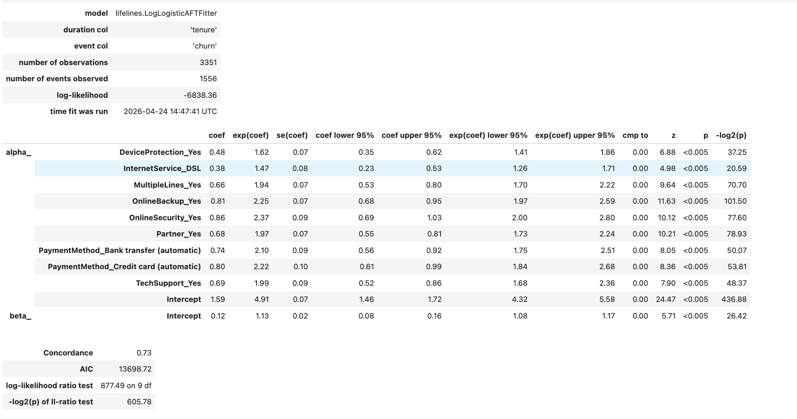
图10: Log‑logistic AFT model summary.
Interpretation of Acceleration Factors
In the log‑logistic AFT model, the coefficient $(\beta)$ is interpreted such that $(\exp(\beta))$ is the acceleration factor. A value larger than 1 means the expected survival time is multiplied by that factor relative to the baseline category. For instance, the coefficient for internetService_DSL is $(0.38)$, giving $(\exp(0.38) \approx 1.47)$; this indicates that a customer with DSL internet survives roughly 1.47 times as long as a fiber‑optic user. All covariates have $(\exp(\beta) > 1)$, confirming their protective effect on retention. Selected acceleration factors are:
- techSupport_Yes: (\exp(\beta) \approx 1.99) – nearly doubles expected lifetime.
- onlineBackup_Yes: (\exp(\beta) \approx 2.25) – more than doubles survival time.
- onlineSecurity_Yes: (\exp(\beta) \approx 2.37) – the largest effect among the service features.
- partner_Yes: (\exp(\beta) \approx 1.97) – having a partner roughly doubles expected lifetime.
- deviceProtection_Yes: (\exp(\beta) \approx 1.62) – a smaller but still positive effect.
- paymentMethod_Bank transfer (automatic) and Credit card (automatic): $(\exp(\beta))$ around 2.10–2.22, indicating that automatic payment methods are associated with substantially longer retention compared to electronic check.
The regression coefficients with 95% confidence intervals are plotted in 图11. The intervals are all well above zero, confirming the significance and direction of each effect.
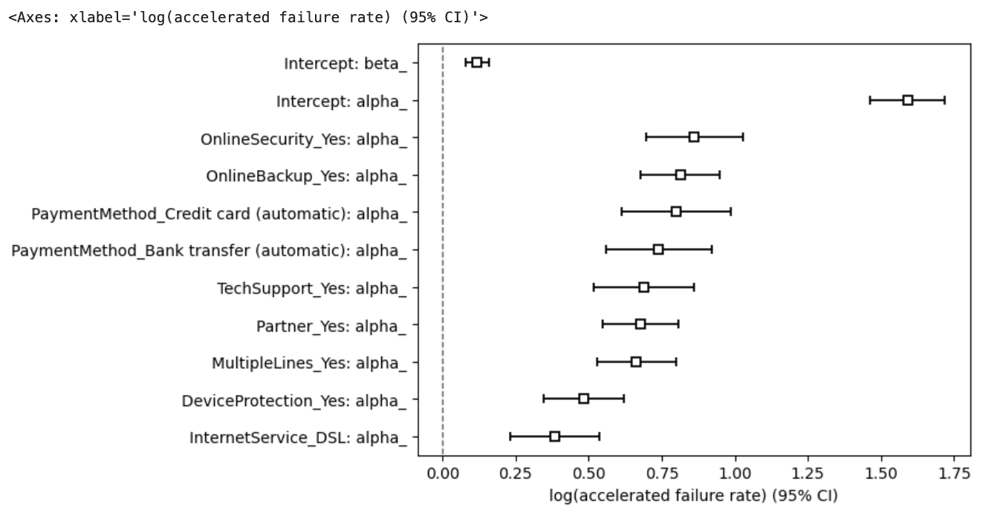
图11: Log‑logistic AFT model coefficients (acceleration factors) with 95% CI.
Model Limitations
As noted during the diagnostic step, the log‑odds curves are not perfectly parallel for many covariates. This means that the proportional odds assumption of the AFT model is not fully satisfied, and the estimated acceleration factors may not be constant over time. While the model still offers useful directional insights and complements the Cox findings, results involving covariates with noticeable non‑parallelism (such as MultipleLines) should be interpreted conservatively. Future work could consider alternative parametric distributions (e.g., Weibull or log‑normal) or more flexible models to better capture time‑varying effects.
Customer Lifetime Value
Methodology
Customer Lifetime Value (CLV) quantifies the net present value of expected future profits from a customer. We estimate CLV using the survival probabilities produced by the fitted Cox proportional hazards model.
For a given customer profile, the model predicts a survival function $(S(t))$, which gives the probability that the customer has not yet churned by month $(t)$. Assuming a constant monthly profit per active customer, the expected profit in month $(t)$ is $(\pi \cdot S(t))$, where $(\pi)$ is the fixed monthly profit. The present value of this expected profit is then obtained by discounting at a monthly rate $(r)$, resulting in the net present value (NPV) in month $(t)$:
$ [
\text{NPV}_t = \frac{\pi \cdot S(t)}{(1 + r)^t}.
] $
The cumulative CLV up to month $ (T) $ is the sum of $ (\text{NPV}_t) $ for $ (t = 1, \dots, T) $. This cumulative measure tells us the maximum amount a business should be willing to spend to acquire or retain a customer while breaking even over the chosen horizon.
In our application, we set $ (\pi = 30) $ (illustrative units) and use an annual internal rate of return of 10%, which translates to a monthly discount rate $ (r = 0.10 / 12 \approx 0.00833) $. The survival probabilities are obtained by calling cph.predict_survival_function() on the selected covariate values. The widgets in the original Databricks dashboard allow interactive exploration of different covariate combinations; for the static report we present the baseline profile where all binary covariates are set to 0 (i.e., the reference category).
CLV Table
图12 shows the first 25 months of the lifetime value calculation for the baseline customer. The survival probability drops quickly in the early months, causing the expected monthly profit and its discounted value to decline over time. The cumulative NPV grows but at a diminishing rate.
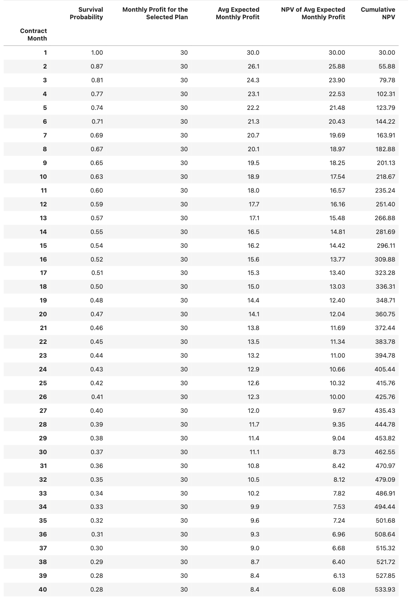
图12: Customer lifetime value calculation for the baseline profile (first 40 months).
Cumulative NPV at Standard Horizons
图13 compares the cumulative NPV at 12, 24, and 36 months. These values provide a direct estimate of the maximum one‑time investment that would break even over each horizon. Based on the Cox model and the assumed profit and discount rate, the cumulative NPVs are:
- 12 months: 251.40 monetary units,
- 24 months: 405.44 monetary units,
- 36 months: 508.64 monetary units.
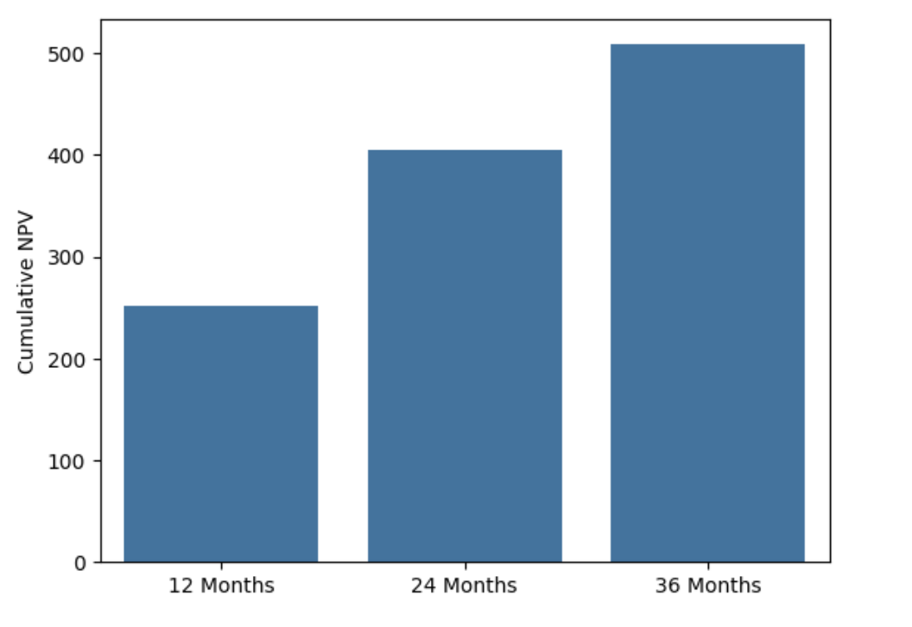
图13: Cumulative NPV at 12, 24, and 36 months for the baseline customer.
Survival Probability Curve
The predicted survival curve for the baseline profile (图14) declines steeply over the first few months and then flattens, consistent with the overall Kaplan–Meier estimate. This curve forms the basis of the CLV calculation.
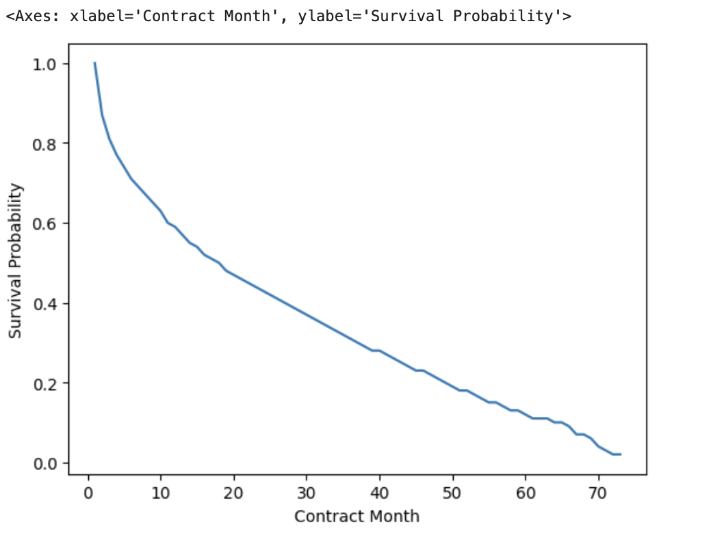
图14: Predicted survival probability by contract month (baseline profile).
The CLV analysis demonstrates how survival model outputs can be translated into actionable financial metrics. By varying the covariate settings (e.g., enabling services like online backup or tech support), one can quantify the incremental value of retention investments and identify the most cost‑effective strategies.
Conclusion and Recommendations
This report applied three complementary survival analysis techniques—Kaplan–Meier estimation, the Cox proportional hazards model, and a log‑logistic accelerated failure time (AFT) model—to identify drivers of customer churn in the IBM Telco dataset and to translate those insights into customer lifetime value estimates.
Key Findings. The overall median survival time for month‑to‑month internet subscribers is approximately 34 months. All four covariates included in the Cox model—dependents_Yes, internetService_DSL, onlineBackup_Yes, and techSupport_Yes—are statistically significant and are associated with lower churn risk. Among them, onlineBackup_Yes and techSupport_Yes stand out, reducing the instantaneous hazard by 54% and 47%, respectively. The AFT model reinforces these conclusions: customers with these services are expected to survive 2.0–2.3 times longer than those without, although the proportional odds assumption of the AFT model is not fully satisfied. The CLV analysis shows that even a baseline customer is expected to generate a cumulative net present value of about 251 units over 12 months, 405 units over 24 months, and a similar increasing amount over 36 months, providing a quantitative benchmark for acquisition and retention spending.
Model Limitations. The proportional hazards assumption of the Cox model is violated for three of the four covariates, particularly for onlineBackup_Yes. This means that the reported hazard ratios represent average effects that may vary over time. Likewise, the log‑logistic AFT model does not meet the proportional odds assumption. Unobserved confounders (e.g., customer satisfaction, service quality) may also bias the estimates. Therefore, the results should be interpreted as associative rather than strictly causal.
Business Recommendations. Given the strong protective effects of online backup and tech support, the company should actively promote these add‑on services, especially to high‑risk segments such as customers paying via electronic check. DSL users also show better retention, suggesting that encouraging DSL adoption (where feasible) could reduce churn. The CLV metrics provide a direct way to evaluate retention investments: any intervention whose cost per retained customer is below the expected incremental CLV would be financially justified.
Future Work. To address the PH violations, future analyses could employ a stratified Cox model (stratifying on variables that fail the PH test) or incorporate time‑dependent covariates. More flexible approaches, such as cubic spline‑based Cox models or machine‑learning survival ensembles (e.g., random survival forests), could further improve both inference and predictive performance. Extending the CLV dashboard to support dynamic what‑if scenarios would also enhance its practical value for decision‑making.